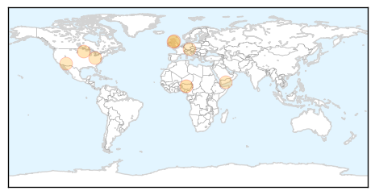

30 Day Trends
Web: 0 alerts, 0 warnings
Twitter: 0 alerts, 0 warnings
Top Articles:
- 0.953
- 18 Nigerian States, 322 Poultry Farms, Affected By Bird Flu
- 0.856
- Officials, U monitoring bird flu cases
- 0.789
- Health chiefs call for better care for pregnant women
- 0.789
- Health chiefs call for better care for pregnant women
- 0.776
- New bird flu strain making rounds
- 0.751
- March 23, 2015 Archives
- 0.751
- March 22, 2015 Archives
- 0.751
- March 22, 2015 Archives
- 0.691
- Flu outbreak causes class suspensions in schools in southern Germany - Xinhua
Top Tweets:
-
No tweets found for Mar 23, 2015
Web/News Articles

Tweets

Article Locations
Article Confidences